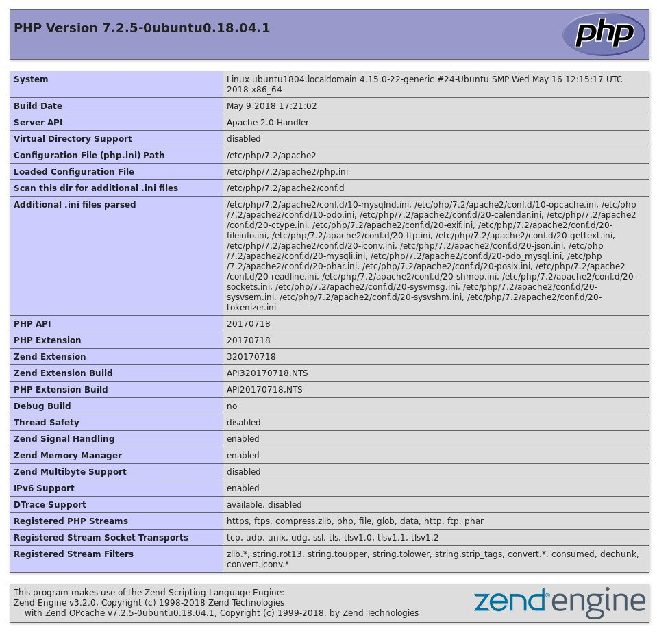

查看 PHP 版本的几种方法
PHP 是最常用的服务器端编程语言之一。 PHP 版本之间有一些重要的区别，因此在某些情况下可能需要知道服务器上正在运行哪个版本。
例如，如果要升级应用程序或安装需要特定 PHP 版本的新应用程序，然后再开始安装，则需要确定 PHP 服务器的版本。
在本文中，我们将向您展示如何检查服务器正在运行的 PHP 版本。
使用 phpinfo() 检查 PHP 版本
找出用于特定网站的 PHP 版本的最可靠方法是使用 phpinfo() 函数，该函数会打印有关 PHP 服务器的各种信息，包括其版本。
在您的网站文档根目录中，使用 FTP 或 SFTP 客户端上传以下 PHP 文件 phpinfo.php：
文件: phpinfo.php
<?php
phpinfo();
打开浏览器，转到 http://yourdoman.com/phpinfo.php ，然后将在屏幕上显示 PHP 服务器的版本：

一旦确定了自己的 PHP 版本，就可以删除文件或限制对其的访问。向公众公开您的 PHP 配置可能会对您的应用程序造成安全风险。
您还可以使用另一个函数来查找 PHP 版本。与 phpinfo() 不同的是，该 phpversion() 函数仅输出 PHP 服务器的版本。
文件: phpversion.php
<?php
echo 'PHP version: ' . phpversion();
从命令行检查 PHP 版本
如果您具有对服务器的 SSH 访问权限，则可以使用 PHP CLI 二进制文件来确定 PHP 的版本。
要获取服务器版本，请使用 php 命令带上 --version 或 -v 选项：
php --version
该命令将输出有关 PHP 版本的信息并退出。在此示例中， PHP 服务器的版本为 7.3.11 ：
PHP 7.3.11-1~deb10u1 (cli) (built: Oct 26 2019 14:14:18) ( NTS )
Copyright (c) 1997-2018 The PHP Group
Zend Engine v3.3.11, Copyright (c) 1998-2018 Zend Technologies
with Zend OPcache v7.3.11-1~deb10u1, Copyright (c) 1999-2018, by Zend Technologies
如果服务器上安装了多个 PHP 版本，则在运行 php 命令时，它将显示默认 PHP CLI 的版本，该版本可能不是网站上使用的 PHP 版本。
结论
确定 PHP 服务器的版本是一个相对容易的任务。
在本指南中，我们显示了有关如何查找服务器当前正在运行的 PHP 版本的几个不同选项。